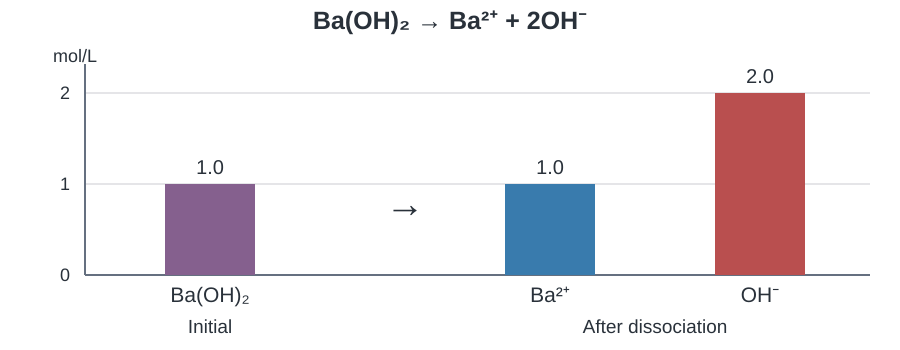
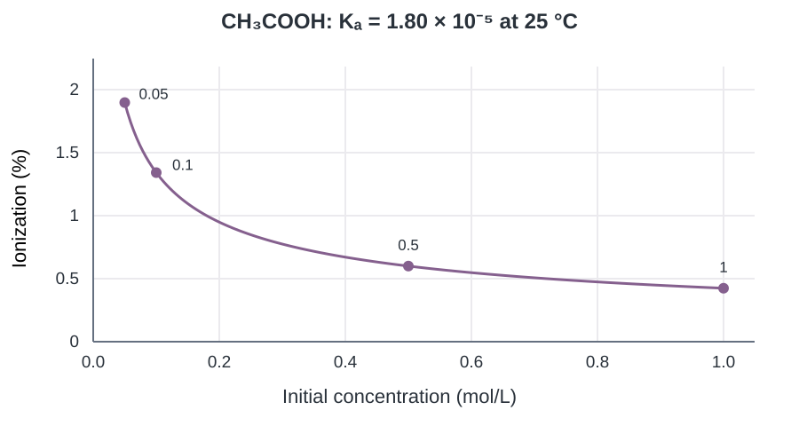

10.3 การแตกตัวของกรด เบส และน้ำ
Learning · ส่วนเล่าเรื่อง
1 กรดแก่กับกรดอ่อนแตกตัวต่างกันอย่างไร?
ภาพ A และ B เริ่มด้วย HA 20 โมเลกุลเท่ากัน ดูช่องหลังลูกศรแล้วนับโมเลกุล HA ที่เหลือในแต่ละภาพ

ภาพ A เหลือ HA กี่โมเลกุล?
เหลือ 0 โมเลกุล HA ทั้ง 20 โมเลกุลให้โปรตอนแก่น้ำ เกิด H₃O⁺ และ A⁻ อย่างละ 20 ตัว แบบจำลองนี้แทนกรดแก่ที่แตกตัวสมบูรณ์

ภาพ B เหลือ HA กี่โมเลกุล?
เหลือ 18 โมเลกุล จึงแตกตัวไป 2 จาก 20 โมเลกุล เกิด H₃O⁺ และ A⁻ อย่างละ 2 ตัว แบบจำลองนี้แทนกรดอ่อนที่แตกตัวบางส่วน
Strong acid กับ strongly acidic ต่างกันอย่างไร?
Strong acid · กรดแก่ บอกความสามารถในการให้โปรตอน ในน้ำกรดแก่แตกตัวเกือบสมบูรณ์ เช่น HCl
Strongly acidic · สารละลายที่มีความเป็นกรดสูง บอกสมบัติของสารละลายที่มี [H₃O⁺] สูงและ pH ต่ำ ต้องพิจารณาทั้งความแรงและความเข้มข้นของกรด HCl ที่เจือจางมากยังเป็นกรดแก่ แต่มี [H₃O⁺] ลดลงและ pH สูงขึ้น

อิเล็กโทรไลต์และการนำไฟฟ้า
อิเล็กโทรไลต์ คือสารที่ให้ไอออนเมื่อละลายในน้ำ ไอออนที่เคลื่อนที่ได้ทำให้สารละลายนำไฟฟ้า
แก่ ให้ไอออนเกือบสมบูรณ์ เช่น HCl, NaOH และ NaCl ส่วน อ่อน ให้ไอออนบางส่วน เช่น CH3COOH และ NH3 น้ำตาลซูโครสละลายเป็นโมเลกุล จึงเป็น นอนอิเล็กโทรไลต์
ใช้ภาพเปรียบเทียบภายใต้ความเข้มข้น อุณหภูมิ และอุปกรณ์เดียวกัน แยกเทียบกรดกับกรดและเบสกับเบส กรดที่ให้ H3O+ มากกว่ามี pH ต่ำกว่า ส่วนเบสที่ให้ OH− มากกว่ามี pH สูงกว่า
กรดแก่ที่ใช้ในบทนี้
HCl, HBr, HI, HNO₃, HClO₄ และ H₂SO₄ เฉพาะการแตกตัวขั้นแรก ส่วน HF เป็นกรดอ่อน
เบสแก่ที่ใช้ในบทนี้
LiOH, NaOH, KOH, Ca(OH)₂, Sr(OH)₂ และ Ba(OH)₂ ส่วนที่ละลายน้ำแล้วแตกตัวเป็นไอออนสมบูรณ์ ส่วน NH₃ เป็นเบสอ่อน
2 กรด–เบสแก่ให้ไอออนอะไร และให้เท่าไร?
เขียนสมการก่อน แล้วอ่านอัตราส่วนจากเลขดุล
HCl ทำปฏิกิริยากับน้ำอย่างไร?
HCl 1 mol ให้ H₃O⁺ 1 mol และ Cl⁻ 1 mol
NaOH กับ Ba(OH)₂ ให้ OH⁻ ต่างกันอย่างไร?
สารที่ละลาย 1 mol ให้ OH⁻ 1 mol จาก NaOH และ 2 mol จาก Ba(OH)₂ ดังนั้นที่ 0.020 mol/L เท่ากัน Ba(OH)₂ ให้ OH⁻ 0.040 mol/L ส่วน NaOH ให้ 0.020 mol/L

อ่านตาราง ICF ตรงไหน?
I ใส่ปริมาณเริ่มต้น C ใส่การเปลี่ยนแปลงตามเลขดุล F อ่านปริมาณสุดท้ายเมื่อสารที่ละลายแตกตัวครบ ใช้หน่วย mol หรือ mol/L ให้เหมือนกันทั้งตาราง
3 จากไอออนกลับไปหาสารตั้งต้น
ก่อนลงตาราง ให้ระบุว่าข้อมูลในโจทย์เป็นของสารตั้งต้นหรือไอออนหลังแตกตัว
จากความเข้มข้นไอออนไปหาโมลของกรดแก่
เช่น ไอออนมีความเข้มข้น 0.20 mol/L ในสารละลาย 500 mL ใช้ตัวประกอบแปลงหน่วย 1 L / 1000 mL
ตัด L และ mL เหลือ mol ใส่โมลไอออนในแถว F ของ ICF แล้วย้อนตามเลขดุลไปหาสารตั้งต้นในแถว I
เติมน้ำแล้วโมลหรือความเข้มข้นเปลี่ยน?
ทำ ICF เป็น mol ก่อน เมื่อเติมเฉพาะน้ำ โมลไอออนจากสารแก่คงเดิม ปริมาตรเพิ่ม ความเข้มข้นจึงลดลง
จากโมลไอออนไปหามวลสารตั้งต้น
หาโมล OH− จาก CV แล้วย้อนตามเลขดุล เช่น OH− 2 mol มาจาก Ba(OH)2 1 mol จากนั้นคูณมวลโมลาร์ของเบส หน่วย mol ตัดกันเหลือ g
4 กรดอ่อน เหตุใดจึงยังมี HA เหลือ?
กลับไปดูภาพ B กรดที่เหลือกับไอออนอยู่ด้วยกันเมื่อระบบเข้าสู่สมดุล
กรดอ่อน HA ทำปฏิกิริยากับน้ำอย่างไร?
HA ให้โปรตอนแก่น้ำได้ และ H₃O⁺ ให้โปรตอนคืนแก่ A⁻ ได้ เมื่ออัตราไปข้างหน้าและย้อนกลับเท่ากัน ความเข้มข้นคงที่ จึงมีทั้ง HA และไอออนที่สมดุล
ภาพ B แตกตัวไปกี่เปอร์เซ็นต์?
นับ HA ที่แตกตัวไป 2 โมเลกุลจากเริ่มต้น 20 โมเลกุล แต่ละโมเลกุลให้ไอออนสองชนิด
x คือความเข้มข้นของสารที่แตกตัวไป และ C₀ คือความเข้มข้นเริ่มต้น ใช้หน่วยเดียวกัน
5 สมดุลกรดอ่อน จากสมการไปตาราง ICE
จากสมการนี้ เขียนนิพจน์ Kₐ อย่างไร?
ใช้ความเข้มข้นที่สมดุลและละน้ำในนิพจน์ เพราะน้ำเป็นตัวทำละลาย เมื่อเทียบกรดภายใต้เงื่อนไขเดียวกัน Kₐ ที่มากกว่าบอกว่ากรดให้โปรตอนได้ดีกว่า
ถ้ากรดแตกตัวไป x แถว E มีค่าอะไร?
| แถว | HA | H₃O⁺ | A⁻ |
|---|---|---|---|
| I · เริ่มต้น | C₀ | 0 | 0 |
| C · เปลี่ยนไป | −x | +x | +x |
| E · สมดุล | C₀ − x | x | x |
ใช้ค่าแถว E ใน Kₐ ตารางนี้ใช้กับการแตกตัวแบบ 1 : 1 ที่ไม่มีไอออนผลิตภัณฑ์เติมมาตั้งแต่ต้น
6 หา x แล้วเลือกว่าจะประมาณหรือใช้สมการเต็ม
เริ่มจากสมการสมดุล แล้วตรวจเงื่อนไขก่อนใช้สูตรถอดราก
ตรวจเกณฑ์ก่อนประมาณตัวส่วน
กรณีที่ไม่มีไอออนผลิตภัณฑ์เติมมาตั้งต้นและละเลยไอออนจากน้ำ ใช้เกณฑ์ในบทนี้ ถ้า C0/K > 1000 ให้ประมาณเฉพาะตัวส่วน C0 − x ≈ C0 แล้วหา x
จัดรูปสมการเต็มและเลือกราก
เก็บ C0 − x ในตัวส่วน คูณไขว้แล้วจัดรูป จากนั้นเลือกรากที่อยู่ระหว่าง 0 กับ C0
7 ถ้ากรดให้โปรตอนได้สองตัว ให้อ่านทีละขั้น
H₂SO₄ กับ H₂SO₃ แตกตัวสองขั้นอย่างไร?
H₂SO₄ ถือว่าขั้นแรกสมบูรณ์ ส่วนขั้นที่สองเป็นสมดุล แถว I ของขั้นสองจึงมี H₃O⁺ จากขั้นแรกอยู่แล้ว ส่วน H₂SO₃ มีสองสมดุลจาก H₂SO₃ → HSO₃⁻ → SO₃²⁻ โดย Kₐ₁ ใหญ่กว่า Kₐ₂ มาก จึงได้ [HSO₃⁻] > [SO₃²⁻] เมื่อไม่นับไอออนจากน้ำ แต่ละ HSO₃⁻ มาพร้อม H₃O⁺ หนึ่งไอออน ส่วนแต่ละ SO₃²⁻ มาพร้อมสองไอออน จึงได้ [H₃O⁺] > [HSO₃⁻]
8 เบสอ่อนใช้ ICE แบบเดียวกัน แต่ติดตาม OH⁻
เบสอ่อน B รับโปรตอนจากอะไร?
น้ำให้โปรตอนแก่ B จึงเกิด BH⁺ และ OH⁻ ใช้ลูกศรสองทางเพราะเป็นสมดุล
จากสมการนี้ เขียนนิพจน์ Kᵦ อย่างไร?
NH₃ รับโปรตอนจากน้ำ เกิด NH₄⁺ และ OH⁻ อย่างละหนึ่งต่อ NH₃ ที่ทำปฏิกิริยาหนึ่งหน่วย ใช้ความเข้มข้นที่สมดุล และละน้ำในนิพจน์ เมื่อ C₀ และอุณหภูมิเท่ากัน เบสที่ Kᵦ มากกว่าให้ OH⁻ และร้อยละการแตกตัวสูงกว่าในกรณี 1 : 1
อ่านไอออนของเบสอ่อนจากแถว E
เมื่อไม่มีไอออนผลิตภัณฑ์เติมมาตั้งต้นและละเลยไอออนจากน้ำ แถว E ของ NH3, NH4+, OH− คือ C0 − x, x, x ตามลำดับ
จาก x ไปหาร้อยละของเบสอ่อน
หารด้วยความเข้มข้นเริ่มต้น C0 ให้ x กับ C0 เป็นหน่วยเดียวกัน แล้วคูณ 100
จาก NaX ไปหา OH⁻ ต้องต่อสองตารางอย่างไร?
ใช้ F ของ ICF จากสมการแรกเป็น I ของ ICE ในสมการที่สอง เช่น NaX 0.20 mol/L ให้ X⁻ ตั้งต้น 0.20 mol/L จากนั้นจึงใช้ Kᵦ ของ X⁻ หา OH⁻ ที่สมดุล
9 ร้อยละการแตกตัวและผลของการเจือจาง
จากที่นับได้ในภาพ B เขียนเป็นสูตรอย่างไร?
x กับ C₀ ใช้หน่วยเดียวกัน เช่น mol/L หน่วยจึงตัดกัน

เมื่อเจือจางกรดอ่อน ร้อยละกับความเข้มข้นไอออนเปลี่ยนอย่างไร?
Ca คือความเข้มข้นเริ่มต้นของกรด ตรงกับ C₀ ในตาราง ICE
เมื่อ Ca/Ka > 1000 และไม่มีไอออนผลิตภัณฑ์เติมมาตั้งต้น ใช้การประมาณโดยละเลยไอออนจากน้ำ
เช่น HA มี Ka = 1.0 × 10−5 ตามกราฟที่อุณหภูมิเดิม หา x ก่อน แล้วแทนในสูตรร้อยละ
| Ca (mol/L) | Ca/Ka | x (mol/L) | ร้อยละการแตกตัว |
|---|---|---|---|
| 0.10 | 104 > 1000 | \(\sqrt{(10^{-5})(0.10)}\) \(=1.0\times10^{-3}\) | \(\frac{1.0\times10^{-3}}{0.10}\times100\%\) \(=1.0\%\) |
| 0.025 | 2.5 × 103 > 1000 | \(\sqrt{(10^{-5})(0.025)}\) \(=5.0\times10^{-4}\) | \(\frac{5.0\times10^{-4}}{0.025}\times100\%\) \(=2.0\%\) |
เมื่อเจือจาง 0.10 → 0.025 mol/L ร้อยละเพิ่ม 1.0% → 2.0% ขณะที่ [H₃O⁺] ลดลง ส่วน Ka คงเดิมที่อุณหภูมิเดิม
10 น้ำให้ไอออนได้อย่างไร?
น้ำโมเลกุลหนึ่งให้โปรตอน อีกโมเลกุลรับโปรตอน
K𝓌 และความเป็นกลางของน้ำ
น้ำบริสุทธิ์ให้สองไอออนชนิดละเท่ากัน ที่ 25 °C จึงมีความเข้มข้นชนิดละ √K𝓌 = 1.0 × 10⁻⁷ mol/L ความเป็นกลางหมายถึง [H₃O⁺] = [OH⁻] ค่า K𝓌 เปลี่ยนได้เมื่ออุณหภูมิเปลี่ยน
11 ทำไม Kₐ ของ HA คูณ Kᵦ ของ A⁻ ได้ K𝓌?
เขียนสองนิพจน์แล้วลองคูณกัน
สมการแรกมอง HA เป็นกรด สมการที่สองมอง A⁻ เป็นเบสคู่กัน
ตัด [HA] และ [A⁻] ออกได้ เพราะสองนิพจน์เป็นของคู่เดียวกันที่อุณหภูมิเดียวกัน เมื่อรวมสองสมการจะเหลือสมการแตกตัวของน้ำ
ถ้ารู้ค่าหนึ่ง หาค่าของคู่กันอย่างไร?
ระบุคู่ให้ถูกก่อน เช่น HA กับ A⁻ ต่างกันหนึ่งโปรตอน แล้วใช้ K𝓌 ที่อุณหภูมิของโจทย์
กรดยิ่งแรง คู่เบสเป็นอย่างไร?
คู่เบสอ่อนลง เพราะที่อุณหภูมิเดียวกัน K𝓌 คงที่ เมื่อ Kₐ ของกรดมากขึ้น Kᵦ ของคู่เบสจึงเล็กลง
Problem · โจทย์และแบบฝึกหัด
ใช้เลขตัวอย่างและข้อเดิมของ สสวท. ป้าย «ฝึกซ้ำ» คือโจทย์เสริมสำหรับทบทวนวิธีคิดและสารสำคัญ
ตัวอย่าง สสวท. และฝึกซ้ำตามวิธีทำ
ฝึกซ้ำ 01 · จำแนกสารจากสูตร
จัด HCl, HBr, HI, HNO3, HClO4, LiOH, NaOH, KOH, Ca(OH)2, Sr(OH)2, Ba(OH)2, HF, CH3COOH และ NH3 เป็นกรดแก่ เบสแก่ กรดอ่อน หรือเบสอ่อน แล้วจำแนก NaCl กับน้ำตาลซูโครสตามชนิดอิเล็กโทรไลต์
กรดแก่ HCl, HBr, HI, HNO3, HClO4
เบสแก่ LiOH, NaOH, KOH, Ca(OH)2, Sr(OH)2, Ba(OH)2
กรดอ่อน HF และ CH3COOH เบสอ่อน NH3
NaCl เป็นอิเล็กโทรไลต์แก่ ส่วนซูโครสเป็นนอนอิเล็กโทรไลต์
ตัวอย่าง 2 (สสวท.) · แก๊ส HBr
ต้องใช้แก๊ส HBr กี่โมล จึงเตรียมสารละลาย 2.0 L ที่มี H3O+ และ Br- เข้มข้นชนิดละ 0.60 mol/L?
หน่วย L ตัดกัน เหลือ mol ของ H₃O⁺ จัดข้อมูลนี้ก่อนลงตาราง.
ข้อมูล H₃O⁺ ที่โจทย์ให้เป็นปริมาณหลังแตกตัว จึงใช้แถว F ของไอออน; ให้เริ่มต้นสารที่จะละลาย a mol.
\[\ce{HBr + H2O -> H3O+ + Br-}\]ดุลสมการ แล้วให้หนึ่งส่วนของการเปลี่ยนเท่ากับ a mol แถว C เปลี่ยนตามอัตราส่วน −1 : +1 : +1.
| แถว (mol) | HBr | H3O+ | Br− |
|---|---|---|---|
| I — เริ่มต้น | a | 0 | 0 |
| C — เปลี่ยนไป | −a | +a | +a |
| F — สุดท้าย | 0 | a | a |
จากแถว F: 1a = 1.20 mol จึง a = 1.20 mol.
\(\ce{HBr + H2O -> H3O+ + Br-}\) อัตราส่วน 1:1:1 จึงต้องมี HBr เข้มข้น 0.60 mol/L และ \(n=CV=0.60(2.0)=1.2\ \mathrm{mol}\)
ฝึกซ้ำ 02 · อ่านอัตราส่วนไปข้างหน้า
สารละลาย Ba(OH)2 0.030 mol/L ให้ Ba2+ และ OH− เข้มข้นเท่าใด? เขียนสมการก่อนตอบ
แถว C ของ ICF เปลี่ยน −0.030, +0.030, +0.060 mol/L ตามเลขดุล จึงได้ [Ba2+] = 0.030 mol/L และ [OH−] = 0.060 mol/L
ฝึกซ้ำ 03 · ย้อนจากไอออนกลับไปหาเบส
สารละลาย Sr(OH)2 มี [OH−] = 0.060 mol/L ใช้ Sr(OH)2 เข้มข้นเริ่มต้นเท่าใด?
ถ้า I ของเบสเป็น a แถว C ให้ OH− +2a และแถว F มี 2a = 0.060 mol/L จึงได้ a = 0.030 mol/L
ตัวอย่าง 3 (สสวท.) · ก · จำนวนโมล
สารละลาย Sr(OH)2 0.40 L มี OH- 1.0 mol/L เติมน้ำจนปริมาตรรวมเป็น 2.00 L
หาโมลของ Sr2+ และ OH- ก่อนและหลังเติมน้ำ
หน่วย L ตัดกัน เหลือ mol ของ OH⁻ จัดข้อมูลนี้ก่อนลงตาราง.
ข้อมูล OH⁻ ที่โจทย์ให้เป็นปริมาณหลังแตกตัว จึงใช้แถว F ของไอออน; ให้เริ่มต้นสารที่จะละลาย a mol.
\[\ce{Sr(OH)2 -> Sr^2+ + 2OH-}\]ดุลสมการ แล้วให้หนึ่งส่วนของการเปลี่ยนเท่ากับ a mol แถว C เปลี่ยนตามอัตราส่วน −1 : +1 : +2.
| แถว (mol) | Sr(OH)2 | Sr2+ | OH− |
|---|---|---|---|
| I — เริ่มต้น | a | 0 | 0 |
| C — เปลี่ยนไป | −a | +a | +2a |
| F — สุดท้าย | 0 | a | 2a |
จากแถว F: 2a = 0.40 mol จึง a = 0.20 mol.
เติมน้ำหลังแตกตัวจนเป็น 2.00 L: โมลไอออนจาก F คงเดิม แล้วใช้ n×(1/V) เปลี่ยนเป็น mol/L.
\[0.20\ \mathrm{mol}\times\frac{1}{2.00\ \mathrm L}=0.1\ \mathrm{mol/L}\]อ่านโมลจากแถว F แล้วหารปริมาตรสุดท้าย เหลือหน่วย mol/L ของ Sr²⁺.
\[0.40\ \mathrm{mol}\times\frac{1}{2.00\ \mathrm L}=0.2\ \mathrm{mol/L}\]อ่านโมลจากแถว F แล้วหารปริมาตรสุดท้าย เหลือหน่วย mol/L ของ OH⁻.
\(n(\ce{OH-})=1.0(0.40)=0.40\ \mathrm{mol}\) และ \(n(\ce{Sr^2+})=0.40/2=0.20\ \mathrm{mol}\) การเติมน้ำไม่เปลี่ยนจำนวนโมลของไอออนแต่ละชนิด
ตัวอย่าง 3 (สสวท.) · ข · ความเข้มข้นใหม่
สารละลาย Sr(OH)2 0.40 L มี OH- 1.0 mol/L เติมน้ำจนปริมาตรรวมเป็น 2.00 L
หาความเข้มข้นของไอออนทั้งสองหลังเติมน้ำ
หน่วย L ตัดกัน เหลือ mol ของ OH⁻ จัดข้อมูลนี้ก่อนลงตาราง.
ข้อมูล OH⁻ ที่โจทย์ให้เป็นปริมาณหลังแตกตัว จึงใช้แถว F ของไอออน; ให้เริ่มต้นสารที่จะละลาย a mol.
\[\ce{Sr(OH)2 -> Sr^2+ + 2OH-}\]ดุลสมการ แล้วให้หนึ่งส่วนของการเปลี่ยนเท่ากับ a mol แถว C เปลี่ยนตามอัตราส่วน −1 : +1 : +2.
| แถว (mol) | Sr(OH)2 | Sr2+ | OH− |
|---|---|---|---|
| I — เริ่มต้น | a | 0 | 0 |
| C — เปลี่ยนไป | −a | +a | +2a |
| F — สุดท้าย | 0 | a | 2a |
จากแถว F: 2a = 0.40 mol จึง a = 0.20 mol.
เติมน้ำหลังแตกตัวจนเป็น 2.00 L: โมลไอออนจาก F คงเดิม แล้วใช้ n×(1/V) เปลี่ยนเป็น mol/L.
\[0.20\ \mathrm{mol}\times\frac{1}{2.00\ \mathrm L}=0.1\ \mathrm{mol/L}\]อ่านโมลจากแถว F แล้วหารปริมาตรสุดท้าย เหลือหน่วย mol/L ของ Sr²⁺.
\[0.40\ \mathrm{mol}\times\frac{1}{2.00\ \mathrm L}=0.2\ \mathrm{mol/L}\]อ่านโมลจากแถว F แล้วหารปริมาตรสุดท้าย เหลือหน่วย mol/L ของ OH⁻.
ใช้โมลเดิมหารปริมาตรสุดท้าย 2.00 L: \([\ce{Sr^2+}]=0.20/2.00=0.10\) และ \([\ce{OH-}]=0.40/2.00=0.20\ \mathrm{mol/L}\)
ฝึกซ้ำ 04 · แยกโมลออกจากความเข้มข้นตอนเจือจาง
สารละลาย NaOH 0.20 mol/L ปริมาตร 50.0 mL เติมน้ำจนมีปริมาตร 200.0 mL จงหาโมล OH− ก่อนและหลังเติมน้ำ และ [OH−] หลังเติมน้ำ
NaOH ให้ OH− อัตราส่วน 1 : 1 จึงได้ (0.20 mol/L)(0.0500 L) = 0.010 mol โมลไอออนจาก NaOH เท่าเดิมหลังเติมน้ำ
ตัวอย่าง 4 (สสวท.) · ร้อยละจากความเข้มข้น
HF 0.5 mol/L แตกตัวให้ H3O+ 0.02 mol/L จงหาร้อยละการแตกตัว
เริ่มผลิตภัณฑ์จากสมดุลนี้ที่ศูนย์ และละเลยไอออนจากน้ำ แถว C ใช้ −1 : +1 : +1 ตามเลขดุล อ่านแถว E ก่อนแทนใน Kₐ หรือ Kᵦ หรือหาร้อยละ.
| แถว (mol/L) | HF | H3O+ | F− |
|---|---|---|---|
| I — เริ่มต้น | 0.50 | 0 | 0 |
| C — เปลี่ยนไป | −0.02 | +0.02 | +0.02 |
| E — สมดุล | 0.48 | 0.02 | 0.02 |
\(\%\text{แตกตัว}=100(0.02)/0.50=4.0\%\) HF แตกตัวให้ H₃O⁺ อัตราส่วน 1:1
ฝึกซ้ำ 05 · หาร้อยละจากปริมาณที่แตกตัว
กรดอ่อน HA เริ่มที่ 0.15 mol/L เมื่อสมดุลมีกรดแตกตัวไป 0.0030 mol/L กรดแตกตัวกี่เปอร์เซ็นต์?
ใช้ปริมาณที่แตกตัวหารความเข้มข้นเริ่มต้น หน่วย mol/L ตัดกัน
ฝึกซ้ำ 06 · ย้อนจากร้อยละหา x และ Kₐ
HA เริ่มที่ 0.25 mol/L แตกตัว 4.0% ให้หา x และ Ka โดยใช้ความเข้มข้น HA ที่เหลือ
x = (4.0/100)(0.25 mol/L) = 0.010 mol/L และ [HA] ที่สมดุล = 0.24 mol/L
ตัวอย่าง 5 (สสวท.) · ใช้การประมาณ
CH3COOH 0.50 mol/L มี H3O+ เข้มข้นเท่าใด? ให้ \(K_a=1.80\times10^{-5}\)
เริ่มผลิตภัณฑ์จากสมดุลนี้ที่ศูนย์ และละเลยไอออนจากน้ำ แถว C ใช้ −1 : +1 : +1 ตามเลขดุล อ่านแถว E ก่อนแทนใน Kₐ หรือ Kᵦ หรือหาร้อยละ.
| แถว (mol/L) | CH3COOH | H3O+ | CH3COO− |
|---|---|---|---|
| I — เริ่มต้น | 0.50 | 0 | 0 |
| C — เปลี่ยนไป | −x | +x | +x |
| E — สมดุล | 0.50−x | x | x |
\(C/K_a=0.50/(1.8\times10^{-5})\approx27778>1000\) จึงประมาณ C−x ≈ C ได้ \(x=\sqrt{K_aC}=\sqrt{9.0\times10^{-6}}=0.0030\ \mathrm{mol/L}\) สมการเต็มได้ 0.002991 mol/L
ฝึกซ้ำ 07 · เขียนแถว E ก่อนแทนค่า
NH3 เริ่มที่ 0.15 mol/L และทำปฏิกิริยากับน้ำไป x mol/L เขียนแถว E ของ NH3, NH4+ และ OH− พร้อมนิพจน์ Kb
แถว C คือ −x, +x, +x จึงได้แถว E เป็น 0.15 − x, x, x ตามลำดับ
ฝึกซ้ำ 08 · กรณีที่ใช้การประมาณได้
HA 0.16 mol/L มี Ka = \(2.5\times10^{-5}\) หาความเข้มข้น H3O+ โดยตรวจเกณฑ์ก่อน
แถว E คือ 0.16 − x, x, x และ C0/Ka = 6400 จึงประมาณตัวส่วนได้
ฝึกซ้ำ 09 · กรณีที่ใช้สมการเต็ม
HA 0.0020 mol/L มี Ka = \(5.0\times10^{-5}\) ใช้แถว E หา [H3O+] และอธิบายการเลือกราก
C0/Ka = 40 ให้คง 0.0020 − x ในตัวส่วน
เลือกรากบวกที่น้อยกว่าความเข้มข้นเริ่มต้น จึงได้ x ประมาณ \(2.9\times10^{-4}\,\mathrm{mol/L}\)
ตัวอย่าง 6 (สสวท.) · แอมโมเนีย
สารละลาย NH3 0.20 mol/L มีร้อยละการแตกตัวเท่าใด?
ที่ 25 °C ให้ \(K_b=1.80\times10^{-5}\)
เริ่มผลิตภัณฑ์จากสมดุลนี้ที่ศูนย์ และละเลยไอออนจากน้ำ แถว C ใช้ −1 : +1 : +1 ตามเลขดุล อ่านแถว E ก่อนแทนใน Kₐ หรือ Kᵦ หรือหาร้อยละ.
| แถว (mol/L) | NH3 | NH4+ | OH− |
|---|---|---|---|
| I — เริ่มต้น | 0.20 | 0 | 0 |
| C — เปลี่ยนไป | −x | +x | +x |
| E — สมดุล | 0.20−x | x | x |
\(C/K_b\approx11111>1000;\quad x\approx\sqrt{(1.8\times10^{-5})(0.20)}=1.89737\times10^{-3}\) ดังนั้น \(100x/C=0.94868\%\approx0.95\%\)
คำถามตรวจสอบความเข้าใจในหนังสือ
ตรวจสอบความเข้าใจ · ลำดับ pH

เรียงลำดับ pH จากน้อยไปมากของสารละลายทั้งสี่ในภาพ โดยไม่ต้องคำนวณ
กรดมี pH ต่ำกว่า 7 และเบสมี pH สูงกว่า 7 ที่ 25 °C เมื่อความเข้มข้นเท่ากัน กรดที่แตกตัวได้มากกว่ามี pH ต่ำกว่า ส่วนเบสที่เกิด OH- ได้มากกว่ามี pH สูงกว่า
ตรวจสอบความเข้าใจ · แผนภูมิแท่ง

แสดงแผนภูมิแท่งความเข้มข้นก่อนและหลังการแตกตัวของ Ba(OH)2 เช่นเดียวกับกรณีกรดแก่ ใช้ความเข้มข้นเริ่มต้น 1.0 mol/L และตรวจอัตราส่วนความสูงของแท่ง

ก่อนแตกตัวใช้ 1.0 mol/L เป็นค่าตั้งต้น หลังแตกตัว Ba(OH)2 เหลือประมาณ 0, Ba2+ = 1.0 และ OH- = 2.0 mol/L แท่งของ OH- จึงสูงเป็นสองเท่าของ Ba2+
ตรวจสอบความเข้าใจ · HI
สารละลาย HI ปริมาตร 500 mL มี I- เข้มข้น 0.2 mol/L จะมี H3O+ กี่โมล?
ไอออนทั้งสองมีจำนวนโมลเท่ากัน
ตรวจสอบความเข้าใจ · KOH
ต้องใช้ KOH กี่กรัม เพื่อเตรียมสารละลาย 250.00 mL ที่มี OH- 0.50 mol/L? ให้มวลโมลาร์ KOH = 56.11 g/mol
อัตราส่วน 1 : 1 ต้องใช้ KOH 0.125 mol
ตรวจสอบความเข้าใจ · H2SO4
H2SO4 1 mol/L มี H3O+ ที่สมดุลเท่ากับ 2 mol/L ใช่หรือไม่ เพราะเหตุใด?
ฝึกซ้ำ 10 · เลือกชนิดลูกศรทีละขั้น
เขียนสมการการแตกตัวของ H2SO4 ในน้ำสองขั้น แล้วระบุว่าไฮโดรเนียมจากขั้นแรกอยู่แถวใดเมื่อตั้งตารางของขั้นสอง
ไฮโดรเนียมจากขั้นแรกมีอยู่เมื่อเริ่มขั้นที่สอง จึงใส่ในแถว I ของ ICE
ตรวจสอบความเข้าใจ · HA
HA \(1.00\times10^{-3}\) mol/L มี \(K_a=1.00\times10^{-5}\) จงหา H3O+ โดยตรวจการประมาณและเลือกรากที่เหมาะสม
\(C/K_a=100\) ไม่ผ่านเกณฑ์ >1000
รากบวก = \(9.51249\times10^{-5}\) และรากลบ = \(-1.051249\times10^{-4}\) mol/L เลือกรากบวก จึงได้ H3O+ = \(9.51\times10^{-5}\) mol/L
ตรวจสอบความเข้าใจ · ก · HA
HA 0.20 mol/L แตกตัว 10% ส่วน HB 0.020 mol/L แตกตัว 20% ข้อสรุปว่า HB แรงกว่า HA ถูกหรือไม่? หาค่าต่อไปนี้ประกอบเหตุผล
หา \(K_a\) ของ HA
ตรวจสอบความเข้าใจ · ข · HB
HA 0.20 mol/L แตกตัว 10% ส่วน HB 0.020 mol/L แตกตัว 20% ข้อสรุปว่า HB แรงกว่า HA ถูกหรือไม่? หาค่าต่อไปนี้ประกอบเหตุผล
หา \(K_a\) ของ HB
ตรวจสอบความเข้าใจ · ค · ข้อสรุป
HA 0.20 mol/L แตกตัว 10% ส่วน HB 0.020 mol/L แตกตัว 20% ข้อสรุปว่า HB แรงกว่า HA ถูกหรือไม่? หาค่าต่อไปนี้ประกอบเหตุผล
HB เป็นกรดแรงกว่า HA ใช่หรือไม่ เพราะเหตุใด?
กิจกรรม 10.1 ร้อยละการแตกตัว
กิจกรรม 10.1 · ตอนที่ 1 · เอทิลเอมีน
คำนวณร้อยละการแตกตัวของ C2H5NH2 0.50 mol/L
ที่ 25 °C ให้ \(K_b=4.47\times10^{-4}\)
ที่สมดุล เบสเหลือ 0.50−x และไอออนผลิตภัณฑ์แต่ละชนิดเท่ากับ x mol/L
\(C/K_b=1.12\times10^3>1000\)
กิจกรรม 10.1 · ตอนที่ 1 · แอมโมเนีย
คำนวณร้อยละการแตกตัวของ NH3 0.50 mol/L
ที่ 25 °C ให้ \(K_b=1.80\times10^{-5}\)
ที่สมดุล เบสเหลือ 0.50−x และไอออนผลิตภัณฑ์แต่ละชนิดเท่ากับ x mol/L
\(C/K_b=2.78\times10^4>1000\)
กิจกรรม 10.1 · ตอนที่ 1 · ฟีนิลเอมีน
คำนวณร้อยละการแตกตัวของ C6H5NH2 0.50 mol/L
ที่ 25 °C ให้ \(K_b=7.41\times10^{-10}\)
ที่สมดุล เบสเหลือ 0.50−x และไอออนผลิตภัณฑ์แต่ละชนิดเท่ากับ x mol/L
\(C/K_b=6.75\times10^8>1000\)
กิจกรรม 10.1 · ตอนที่ 1 · เปรียบเทียบ
เรียงลำดับร้อยละการแตกตัวของเบสทั้งสามจากมากไปน้อย
ประมาณ 3.0%, 0.60% และ \(3.8\times10^{-3}\%\) ตามลำดับ
กิจกรรม 10.1 · ตอนที่ 2 · 0.050 mol/L
กรดแอซีติกชนิดเดิมที่ 25 °C ให้ \(K_a=1.80\times10^{-5}\)
หาร้อยละการแตกตัวที่ความเข้มข้น 0.050 mol/L
\(C/K_a=2.78\times10^3>1000\)
กิจกรรม 10.1 · ตอนที่ 2 · 0.10 mol/L
กรดแอซีติกชนิดเดิมที่ 25 °C ให้ \(K_a=1.80\times10^{-5}\)
หาร้อยละการแตกตัวที่ความเข้มข้น 0.10 mol/L
\(C/K_a=5.56\times10^3>1000\)
กิจกรรม 10.1 · ตอนที่ 2 · 0.50 mol/L
กรดแอซีติกชนิดเดิมที่ 25 °C ให้ \(K_a=1.80\times10^{-5}\)
หาร้อยละการแตกตัวที่ความเข้มข้น 0.50 mol/L
\(C/K_a=2.78\times10^4>1000\)
กิจกรรม 10.1 · ตอนที่ 2 · 1.0 mol/L
กรดแอซีติกชนิดเดิมที่ 25 °C ให้ \(K_a=1.80\times10^{-5}\)
หาร้อยละการแตกตัวที่ความเข้มข้น 1.0 mol/L
\(C/K_a=5.56\times10^4>1000\)
กิจกรรม 10.1 · ตอนที่ 2 · ข้อ 2
กรดแอซีติกชนิดเดิมที่ 25 °C ให้ \(K_a=1.80\times10^{-5}\)
แสดงกราฟร้อยละการแตกตัวกับความเข้มข้นทั้งสี่ค่า ระบุปริมาณบนแกนและแนวโน้ม ใช้กราฟในเฉลยประกอบการตรวจผลได้
ใช้ค่าที่คำนวณได้สำหรับความเข้มข้น 0.050, 0.10, 0.50 และ 1.0 mol/L

แกนนอน: ความเข้มข้นเริ่มต้น (mol/L) แกนตั้ง: ร้อยละการแตกตัว ความเข้มข้นเพิ่มขึ้น ร้อยละการแตกตัวลดลง ใช้กราฟนี้ประกอบการอธิบายได้โดยไม่ต้องวาดอุปกรณ์ใหม่
คำถามท้ายกิจกรรม 10.1 · ข้อ 1
ร้อยละการแตกตัวของเบสในสารละลายมีแนวโน้มเดียวกับค่า \(K_b\) หรือไม่ อย่างไร?
คำถามท้ายกิจกรรม 10.1 · ข้อ 2
ร้อยละการแตกตัวของกรดในสารละลายขึ้นกับความเข้มข้นของกรดหรือไม่ อย่างไร?
แบบฝึกหัดท้ายหัวข้อ 10.3
แบบฝึกหัด 10.3 · ข้อ 1
ต้องใช้ Ba(OH)2 กี่กรัม เพื่อเตรียมสารละลาย 100.0 mL ที่มี OH- 1.0 mol/L? ให้มวลโมลาร์ Ba(OH)2 = 171.35 g/mol
ตัดหน่วย mL แล้วตัด L เหลือ mol ของ OH⁻ จัดข้อมูลนี้ก่อนลงตาราง.
ข้อมูล OH⁻ ที่โจทย์ให้เป็นปริมาณหลังแตกตัว จึงใช้แถว F ของไอออน; ให้เริ่มต้นสารที่จะละลาย a mol.
\[\ce{Ba(OH)2 -> Ba^2+ + 2OH-}\]ดุลสมการ แล้วให้หนึ่งส่วนของการเปลี่ยนเท่ากับ a mol แถว C เปลี่ยนตามอัตราส่วน −1 : +1 : +2.
| แถว (mol) | Ba(OH)2 | Ba2+ | OH− |
|---|---|---|---|
| I — เริ่มต้น | a | 0 | 0 |
| C — เปลี่ยนไป | −a | +a | +2a |
| F — สุดท้าย | 0 | a | 2a |
จากแถว F: 2a = 0.100 mol จึง a = 0.050 mol.
\[0.0500\ \mathrm{mol}\times\frac{171.35\ \mathrm g}{1\ \mathrm{mol}}=8.567500\ \mathrm g\]ใช้โมลของสารที่จะชั่งคูณมวลโมลาร์ หน่วย mol ตัดกัน เหลือ g.
\(n(\ce{OH-})=1.0(0.1000)=0.100\ \mathrm{mol}\) จึงใช้ Ba(OH)₂ 0.0500 mol และ \(m=0.0500(171.35)=8.5675\ \mathrm{g}\) ประมาณ 8.57 g
แบบฝึกหัด 10.3 · ข้อ 2
H2SO3 มี \(K_{a1}=1.41\times10^{-2}\) และ \(K_{a2}=6.31\times10^{-8}\) จงเปรียบเทียบความเข้มข้นของไอออนต่าง ๆ ในสารละลาย
ขั้นแรกแตกตัวได้มากกว่าขั้นที่สองมาก ทั้งสองขั้นให้ H3O+ แต่ขั้นที่สองใช้ HSO3- ไปบางส่วน จึงได้
พิจารณาไอออนจากกรด; OH- จากน้ำมีน้อยมากในสารละลายกรดนี้
แบบฝึกหัด 10.3 · ข้อ 3
HNO2 กับ HF มีความเข้มข้นและปริมาตรเท่ากัน สารละลายใดมี H3O+ เข้มข้นมากกว่า เพราะเหตุใด?
ที่ 25 °C ให้ \(K_a(\ce{HNO2})=5.62\times10^{-4},\;K_a(\ce{HF})=6.31\times10^{-4}\)
แบบฝึกหัด 10.3 · ข้อ 4
NaX แตกตัวให้ X- ในจำนวนโมลเท่ากัน และมีสมดุล \(\ce{X-(aq) + H2O(l) <=> HX(aq) + OH-(aq)}\) ให้ \(K_b=1.0\times10^{-4}\) จงหา OH- ใน NaX 2.0 mol/L
ดุลสมการ แล้วให้หนึ่งส่วนของการเปลี่ยนเท่ากับ 2.0 mol/L แถว C เปลี่ยนตามอัตราส่วน −1 : +1 : +1.
| แถว (mol/L) | NaX | Na+ | X− |
|---|---|---|---|
| I — เริ่มต้น | 2.0 | 0 | 0 |
| C — เปลี่ยนไป | −2.0 | +2.0 | +2.0 |
| F — สุดท้าย | 0 | 2.0 | 2.0 |
แถว F ของ NaX ให้ [X⁻] = 2.0 mol/L ใช้เป็นแถว I ของ ICE แล้วจึงคำนวณ Kᵦ.
\[\ce{X- + H2O <=> HX + OH-}\]เริ่มผลิตภัณฑ์จากสมดุลนี้ที่ศูนย์ และละเลยไอออนจากน้ำ แถว C ใช้ −1 : +1 : +1 ตามเลขดุล อ่านแถว E ก่อนแทนใน Kₐ หรือ Kᵦ หรือหาร้อยละ.
| แถว (mol/L) | X− | HX | OH− |
|---|---|---|---|
| I — เริ่มต้น | 2.0 | 0 | 0 |
| C — เปลี่ยนไป | −x | +x | +x |
| E — สมดุล | 2.0−x | x | x |
\(\ce{X- + H2O <=> HX + OH-}\) เริ่ม [X⁻] = 2.0 และ C/Kb = 20000 จึงได้ \(x\approx\sqrt{(10^{-4})(2.0)}=0.01414\ \mathrm{mol/L}\) สมการเต็มได้ 0.01409 mol/L ใช้ Kb = 10⁻⁴ ตามโจทย์
ฝึกซ้ำ 11 · ต่อค่าจาก ICF เข้าสู่ ICE
NaX 0.35 mol/L ให้ X− ซึ่งเป็นเบสอ่อน เขียนสมการสองขั้นและระบุ [X−] ในแถว I ของ ICE
NaX ให้ X− 1 : 1 จึงนำ [X−] = 0.35 mol/L จากแถว F ของ ICF มาเป็นแถว I ของ ICE
แบบฝึกหัด 10.3 · ข้อ 5 ก
เมทิลเอมีน CH3NH2 0.50 mol/L ที่ 25 °C ให้ \(K_b=4.57\times10^{-4}\)
หา CH3NH3+ ที่สมดุล
\(C/K_b=1.094\times10^3>1000\)
จึงได้ CH3NH3+ ≈ \(1.5\times10^{-2}\) mol/L
แบบฝึกหัด 10.3 · ข้อ 5 ข
เมทิลเอมีน CH3NH2 0.50 mol/L ที่ 25 °C ให้ \(K_b=4.57\times10^{-4}\)
หาร้อยละการแตกตัวของเมทิลเอมีน
แบบฝึกหัด 10.3 · ข้อ 6 ก
กรดเบนโซอิก C6H5COOH มี \(K_a=5.75\times10^{-5}\) คำนวณและเปรียบเทียบร้อยละการแตกตัวในสองสารละลาย
คำนวณร้อยละการแตกตัวที่ 0.25 mol/L
\(C/K_a=4.35\times10^3>1000\)
แบบฝึกหัด 10.3 · ข้อ 6 ข
กรดเบนโซอิก C6H5COOH มี \(K_a=5.75\times10^{-5}\) คำนวณและเปรียบเทียบร้อยละการแตกตัวในสองสารละลาย
คำนวณร้อยละการแตกตัวที่ 0.40 mol/L
\(C/K_a=6.96\times10^3>1000\)
แบบฝึกหัด 10.3 · ข้อ 6 ค
กรดเบนโซอิก C6H5COOH มี \(K_a=5.75\times10^{-5}\) คำนวณและเปรียบเทียบร้อยละการแตกตัวในสองสารละลาย
สารละลายใดมีร้อยละการแตกตัวมากกว่า?
แบบฝึกหัด 10.3 · ข้อ 7
หา \(K_a\) ของ HA 0.80 mol/L ซึ่งแตกตัว 0.42%
เก็บตัวเลขระหว่างคำนวณไว้ก่อน แล้วปัดคำตอบสุดท้าย
แบบฝึกหัด 10.3 · ข้อ 8 ก
กรด HY ที่ 25 °C มี \(K_a=2.0\times10^{-6},\;K_w=1.0\times10^{-14}\)
ระบุคู่เบสของ HY
แบบฝึกหัด 10.3 · ข้อ 8 ข
กรด HY ที่ 25 °C มี \(K_a=2.0\times10^{-6},\;K_w=1.0\times10^{-14}\)
หา \(K_b\) ของคู่เบสนี้
แบบฝึกหัด 10.3 · ข้อ 9
เบสอ่อนมี \(K_b=5.0\times10^{-10}\) จงหา \(K_a\) ของคู่กรดที่ 25 °C
ฝึกซ้ำ 12 · จำสารแล้วเขียนสมการจากชื่อ
เขียนสูตรและสมการในน้ำของกรดไฮโดรโบรมิก กรดไฮโดรฟลูออริก แบเรียมไฮดรอกไซด์ และแอมโมเนีย เลือกลูกศรและระบุไอออนที่บอกความเป็นกรดหรือเบสในแต่ละสมการ
กรดทั้งสองให้ H3O+ เบสทั้งสองให้ OH− HBr และส่วนที่ละลายของ Ba(OH)2 แตกตัวสมบูรณ์ ส่วน HF และ NH3 ใช้ลูกศรสมดุล